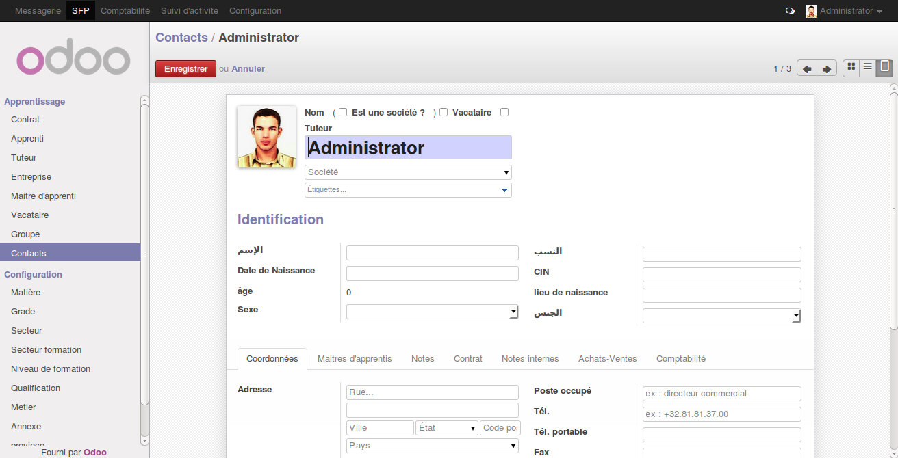
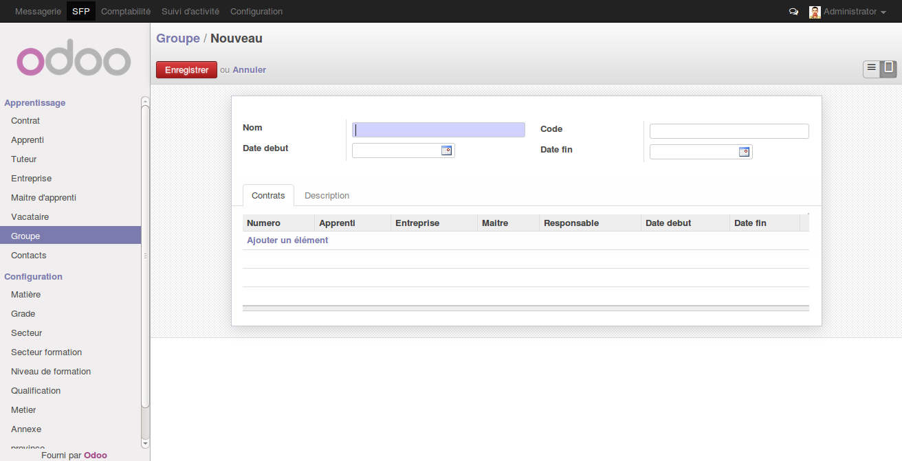

Un contrat est un accord de volonté entre apprenti & entreprise d'aceuil en vue de créer une ou des obligations juridiques.
Les groupes permet de regroupée un ensemble determinée des apprentis en vue de lancer la formtion.
Les contacts constituent l'ensemble des acteurs de systeme qui font l'objet d'un u plusieurs contrats.
Un contrat est un accord de volonte en vue de créer une ou des obligations juridiques. C'est un engagement volontaire, entre les apprentis, entreprises, vacataires et le centre de formation. il constituent le point de demarage d'un apprentis au sein d'une entreprise.
Les contacts constituent l'ensemble des acteurs de systeme qui font l'objet d'un ou plusieurs, un contact peut etre un Apprenti, entreprise, vacataire, tuteur, chef d'entreprise...
Le contact majeur de systeme est l'apprenti, c'est l'objet de contrat avec une entreprise
Le contact majeur de systeme est l'entreprise, c'est l'objet de contrat avec un apprenti
Le Vacataire est le responsable de suivi et de formation dans l'entreprise d'acueil
dans le cas au les apprentis sont encore mineur toute les operations se déroulent en presences d'un tuteur qui sera responsable.
Les groupes constituent l'ensembles des apprenti regroupée par un ensemble de critères en vue de demarrage d'une formation.
Les centres de formations constituent les endroit au se deroule la formation
Constituent un ensemble du secteurs disponible pour les formations...
Gere un ensemble des metiers disponibles pour la formation...
Les groupes constituent l'ensembles des apprenti regroupée par un ensemble de critères en vue de demarrage d'une formation.